Released on July 1, 2009
(Next Release on July 8, 2009)
Have Gasoline Prices Passed This Summer’s Peak?
Heading into the 4th of July weekend, U.S. drivers are understandably concerned about gasoline prices, which have risen by more than $1 per gallon so far in 2009, and by nearly 60 cents per gallon since the beginning of May. On the other hand, gasoline prices remain well below last summer’s record levels, and actually posted a decrease in the past week. Have we already seen the worst for this year?
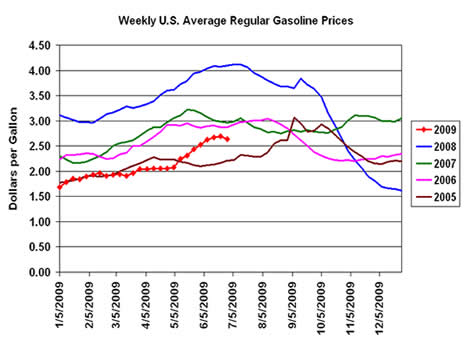
U.S. retail gasoline prices are driven by a number of factors (see the EIA brochure “A Primer on Gasoline Prices”), most notably, global crude oil prices and the balance between gasoline supply and demand in the United States. The major factor behind last year’s high gasoline prices, peaking at over $4.11 per gallon in early July, was record high crude oil prices, which reached over $130 per barrel - about twice the current level - as measured by EIA’s U.S. imported crude oil price (average imported prices weighted by estimated U.S. import volumes). Crude prices, in turn, were supported by strong growth in global product demand in the first half of the year, especially for diesel fuel and other distillates, at a time when production of crude oil outside of the Organization of the Petroleum Exporting Countries (OPEC) actually declined from its prior-year level. The usual summer tightening of the gasoline supply/demand balance seen in the peak driving season was somewhat muted last year, as high gasoline prices and a weakening economy brought on a significant reduction in demand. Crude oil prices peaked in early July 2008, and by late November both demand and prices for gasoline had dropped to their lowest levels for that time of year since 2003. Last year ended with a national average price for regular gasoline of $1.61 per gallon, the lowest price in nearly 5 years.
In early 2009, there were few indications that gasoline prices would increase to their current levels. Average world crude oil prices had fallen below $40 per barrel, less than one-third the price of six months earlier, and attempts by OPEC members to bolster prices by reducing output had yet to produce significant results. Gasoline demand had been weakened by previous high prices and the economic downturn, and U.S. inventories were in the middle of their seasonal average range. However, as 2009 progressed, a number of factors, including OPEC export discipline, relatively flat non-OPEC production, and some early indications that the economic situation was stabilizing, contributed to a significant recovery in crude oil prices, despite the impact of continued global economic weakness on world oil demand. U.S. gasoline demand, which dropped to extremely low levels during the third quarter of last year, has strengthened since then in comparison to prior-year levels. Last September, U.S. gasoline demand was over 8 percent lower than it had been a year earlier. By March and April of this year, with significantly lower prices, gasoline demand was only 2 percent below its level of a year before. Domestic refinery gasoline production and imports remained low, in expectation of lackluster demand, resulting in a drop in inventories in April and May, ahead of the traditional peak summer driving season. Although retail prices are at their lowest end-of-June level since 2005, the solid uptrend over the past several months has prompted consumer anxiety.
Despite understandable concern over the increase in U.S. gasoline prices to date in 2009, it appears that the summer market may be near, if not past, its peak. After rising steadily for the previous 8 weeks, the U.S. imported crude oil price dropped back slightly last week to $65.92 per barrel. As rising refinery production and imports have pushed inventories upward from their early-June low, U.S. gasoline spot and futures prices have retreated more sharply than those for crude oil, and now stand about 14 cents below their mid-June peaks. The U.S. average retail price for regular gasoline fell 4.9 cents in the last week to $2.64 per gallon, the first weekly decline since April 27. As the summer progresses, expected increases in demand due to vacation travel can likely be met by higher refinery production or imports, since these supply sources have met significantly higher demand levels in recent years. Additionally, with diesel fuel demand more negatively affected by economic weakness, and U.S. distillate stocks at very high levels, suppliers could devote more resources to gasoline if needed. Barring an unexpected supply interruption or international price shock, the June 22 price of $2.69 per gallon may be the highest weekly regular gasoline price for the summer of 2009 – which would be good news for drivers planning to take to the road on the July 4th weekend or later this summer.
U.S. Average Gasoline Price Drops a Nickel
Reversing the trend of the previous eight weeks, the U.S. average price for regular gasoline fell, moving down five cents to $2.64 per gallon. The price was $1.45 below last year. Prices decreased throughout the country, with the largest drop occurring in the Midwest. On the East Coast, the price slipped three cents to $2.63 per gallon. The price in the Midwest fell nine cents to settle at $2.57 per gallon. At $2.52 per gallon, the average price on the Gulf Coast remained the lowest of any region. In the Rocky Mountains, the price was essentially unchanged at $2.60 per gallon. The price on the West Coast slipped three cents to $2.91 per gallon. In California, the average price dipped two cents to $2.98 per gallon.
Diesel prices fell for the first time since May 4. The U.S. average price for diesel fuel slipped about a penny, settling at $2.61 per gallon. That price was $2.04 below the price a year ago. With the exception of the Rocky Mountain region, prices slipped slightly throughout the country. On the East Coast and in the Midwest, the prices dropped under a penny to $2.63 and $2.58 per gallon, respectively. The Rocky Mountain price was $2.63 per gallon, reflecting an increase of two cents. The average prices in the Gulf Coast and the West Coast also decreased about a penny to $2.57 and $2.71 per gallon, respectively. In California, the price was essentially unchanged at $2.79 per gallon.
Propane Build Continues Strong
Propane inventories continued on their sharp upward path last week, adding over 3.6 million barrels to an estimated 60.8 million barrels as of June 26, 2009. So far, the June stockbuild remains one of the largest in recent years, with inventories reaching a level typically not seen until much later in the stockbulding season. The Gulf Coast continued to report most of the overall gain last week with inventories moving up by 3.0 million barrels. Midwest inventories posted a 0.5-million-barrel gain while the combined Rocky Mountain/West Coast region saw inventories rise by 0.1 million barrels. Inventories in the East Coast remained relatively unchanged during this same time. Propylene non-fuel use inventories continued lower last week, resulting in a smaller share of 3.1 percent of total propane/propylene inventories compared with a 3.6 percent share from the previous report period.
Text from the previous editions of “This Week In Petroleum” is now accessible through a link at the top right-hand corner of this page.
| Retail Prices (Cents Per Gallon) | |||||||
| 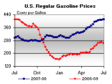 | 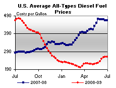 | ||||||
| Retail Data | Changes From | Retail Data | Changes From | ||||
| 06/29/09 | Week | Year | 06/29/09 | Week | Year | ||
| Gasoline | 264.2 | Diesel Fuel | 260.8 | ||||
| Spot Prices (Cents Per Gallon*) | |||||||||||||||||||||||||||||||||||
| 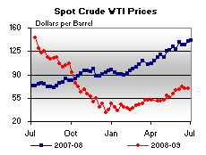 | 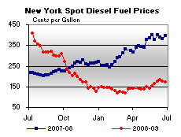 | ||||||||||||||||||||||||||||||||||
| 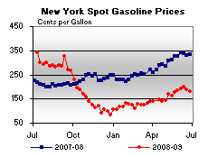 | 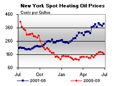 | ||||||||||||||||||||||||||||||||||
|
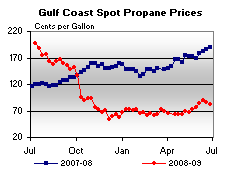 | ||||||||||||||||||||||||||||||||||
| *Note: Crude Oil WTI Price in Dollars per Barrel. | |||||||||||||||||||||||||||||||||||
| Stocks (Million Barrels) | |||||||
| 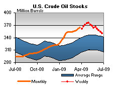 | 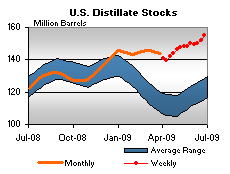 | ||||||
| 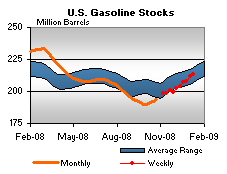 | 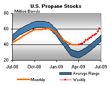 | ||||||
| Stocks Data | Changes From | Stocks Data | Changes From | ||||
| 06/26/09 | Week | Year | 06/26/09 | Week | Year | ||
| Crude Oil | 350.2 | Distillate | 155.0 | ||||
| Gasoline | 211.2 | Propane | 60.752 | ||||